Barn Owl A.2
Organic anatomy and feather architecture. Compare the cheek in profile, the taper of the folded wing and the toes as the owl settles onto the branch.
Photographic references

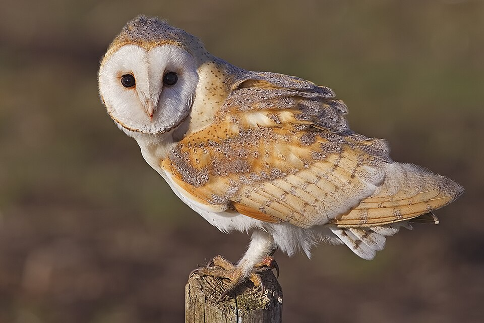


.jpg){kind=link}
Both photographs are reproduced under CC BY 2.0. A.2 uses cropped and remapped colour samples from Ward’s photograph for the head and wing guides. The photographic eye and bill were removed from the head sample. The model supplies the orbits, lids and bill in geometry.
Matched plates
A.1 is on the left and A.2 on the right. Each pair shares the same orthographic camera, metre scale, lighting, action and simulation time. The silhouette uses a single unlit material. Select a plate to inspect it at full size.
Facial disc
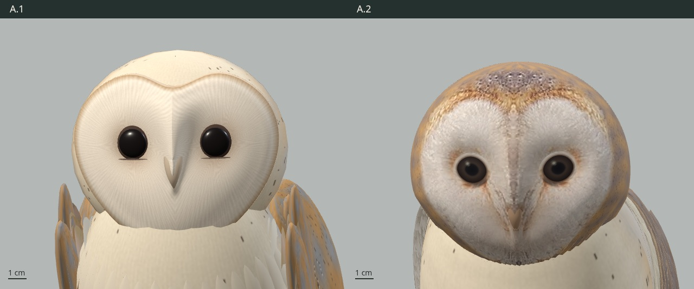
Cheek and nape
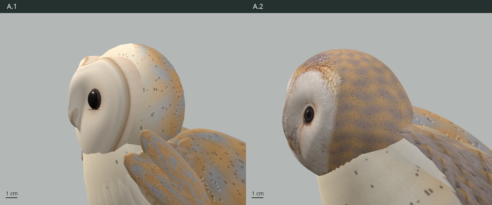
Three-quarter
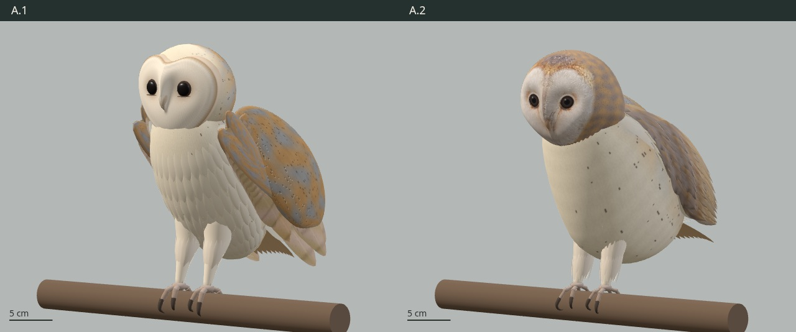
Side
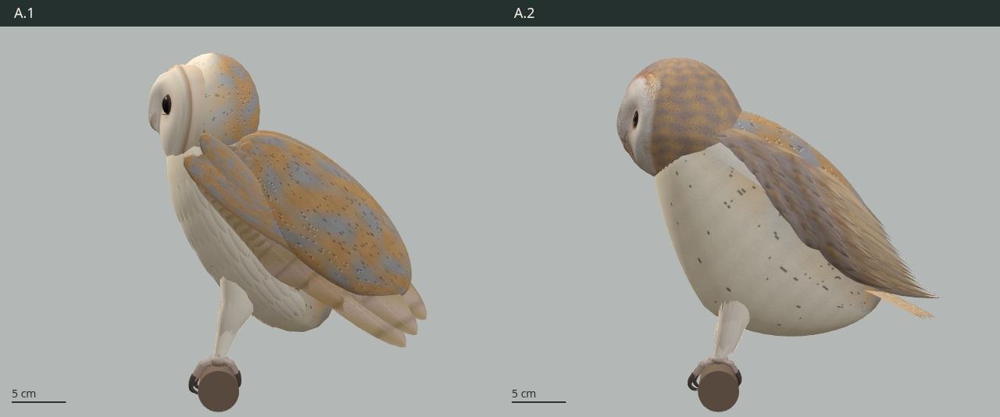
Front
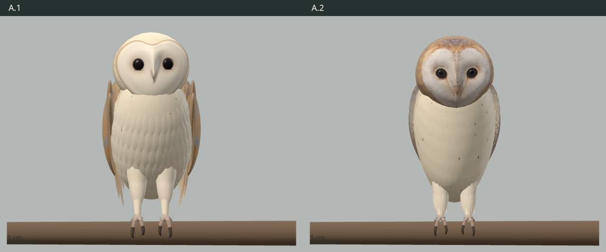
Rear
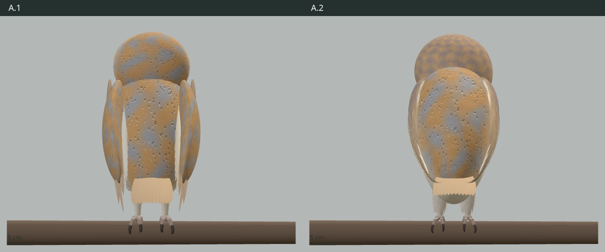
Folded wing
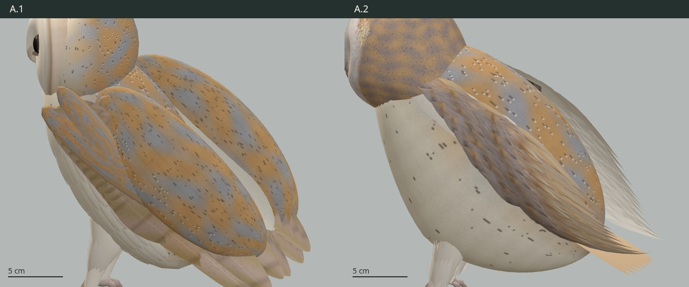
Extended wings from above
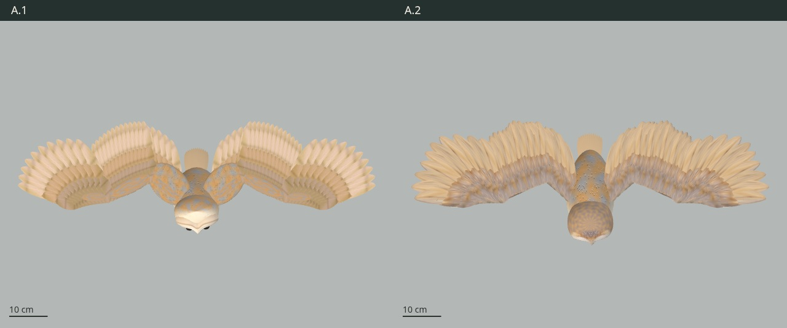
Extended wings from below
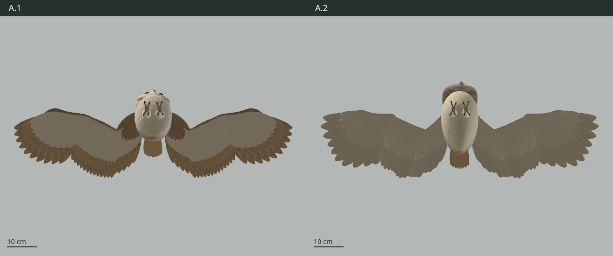
Perched silhouette
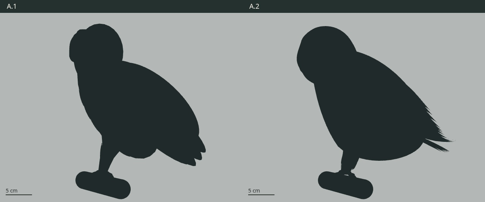
Talon contact
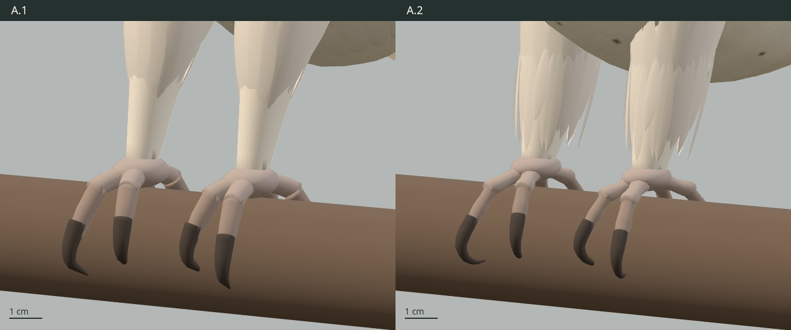
Motion recordings
Each panel advances at 60 simulation steps per second. Both revisions are recorded together at 20 fps using the A.1 root as the common camera target. The circuit returns to the original perch. The glide, bank and landing takes begin from the same powered-flight warm-up.
Perched breathing and head tracking
Takeoff and release
Powered flight
Gliding
Banking
Landing flare and grip
Breathing moves the breast and neck above stationary foot carriers. The launch compresses and then extends the body. The wrist and distal vanes lag the shoulder during a powered stroke. On approach, the rig pitches up, reaches with the feet and compresses briefly after contact.
Rendering measurements
One isolated, fully visible owl. Each row includes 12 warm-up draws followed by 32 timed frames at 640 × 500, with a synchronous one-pixel readback. Both revisions used Chromium and ANGLE SwiftShader. These are software-renderer frame costs. Production GPU timing remains unmeasured.
| Revision | LOD | Triangles | Draws | Albedo MiB¹ | Median ms | P95 ms |
|---|---|---|---|---|---|---|
| A.1 | 0 | 57,684 | 85 | 1.71 | 89.0 | 95.8 |
| A.2 | 0 | 54,100 | 14 | 1.33 | 97.1 | 131.4 |
| A.1 | 1 | 31,540 | 85 | 1.71 | 71.0 | 80.1 |
| A.2 | 1 | 31,128 | 14 | 1.33 | 76.3 | 83.9 |
| A.1 | 2 | 11,944 | 73 | 1.71 | 24.9 | 61.2 |
| A.2 | 2 | 9,924 | 14 | 1.33 | 21.2 | 55.0 |
Where the draws went
A.1 at LOD0 used 32 wing draws, 30 leg and foot draws, 12 tail draws, nine head draws and two body draws. A.2 uses six wing draws, six head draws, one breast draw and one skinned draw for both feet and the tail. Vertex colours let toes, claws and tail vanes share a material while each phalanx and rectrix keeps its transform.
Each wing segment packs its leading edge, flight feathers and coverts into one indexed mesh. The six meshes share a material. LOD2 omits the smallest coverts and simplifies the remaining vanes. Instancing would require per-feather shape and fold data for vanes of different lengths and curvature. The segment batches already submit each tract together and preserve the flex targets. Frame time still includes skinning, morphs and overlapping feather surfaces.
The measured A.2 perched height is 30.8 cm and its extended span is 93.1 cm. A.1 measures 31.6 cm and 93.1 cm under the same measurement.